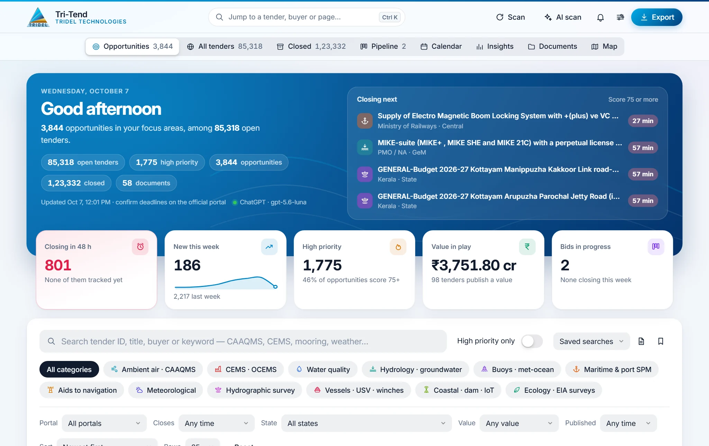
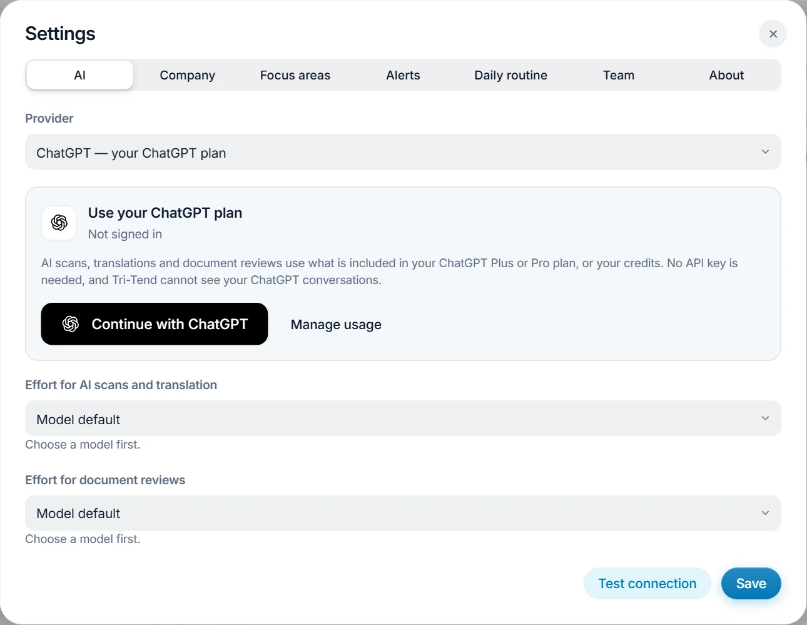
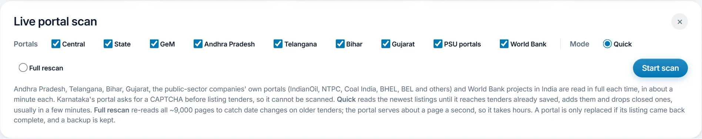
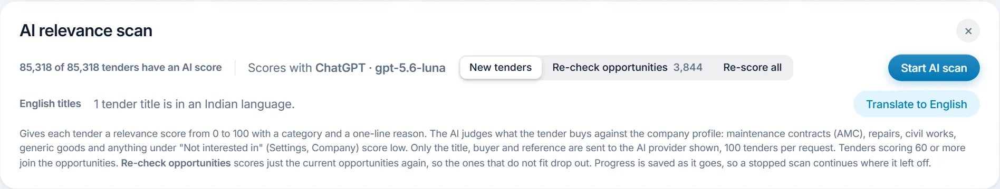
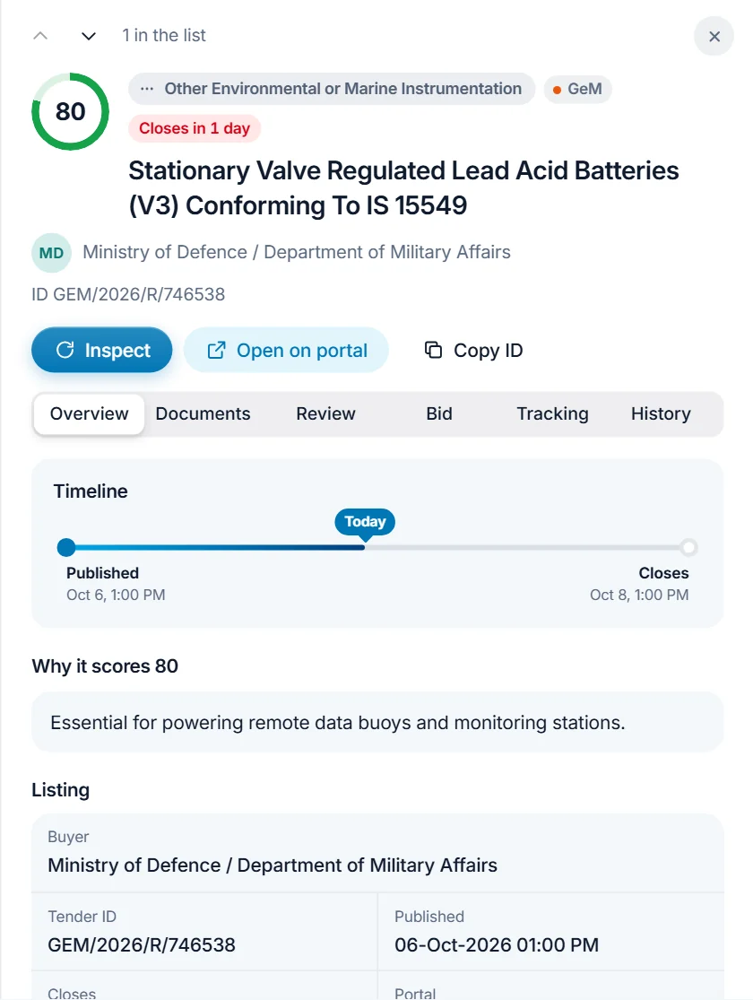
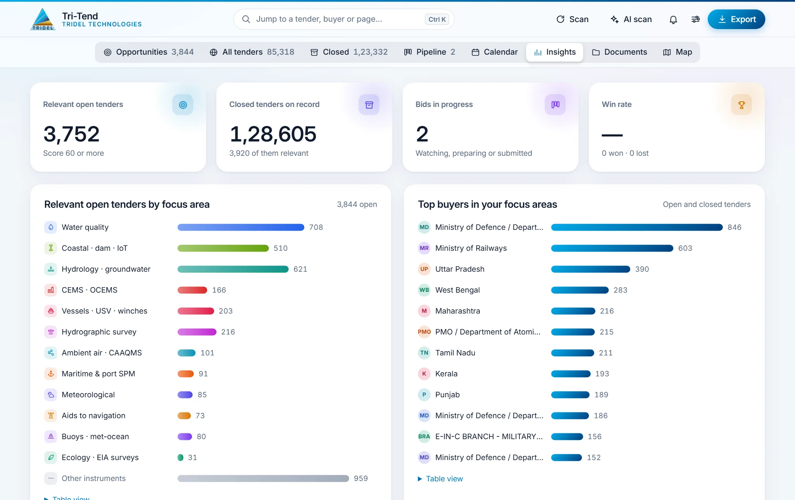

Every portal in one list
A quick scan adds the newest tenders in minutes. Closed tenders move to their own list, so what you see can still be bid on.
Tri-Tend reads India's public procurement portals, scores every tender with AI against your focus areas, reviews the documents and keeps each bid on track, all on your own Windows PC.

Reads these portals
What it does
Every day Tri-Tend brings the new tenders into one list, and AI picks out the ones that match what Tridel offers.
A quick scan adds the newest tenders in minutes. Closed tenders move to their own list, so what you see can still be bid on.
Each tender is judged on what it buys, against your company profile. 60 and above is an opportunity, 75 and above is high priority.
The AI reads the tender documents and gives a recommendation, eligibility against your profile and points to verify, citing the passages it used.
A bid or no-bid scorecard, a bid pack (one PDF with contents, and a ZIP), ready-made Word letters, and EMD and guarantee records.
Track bids from Watching to Won, see closing dates on a calendar, and get a daily digest by Windows notification, email or Telegram.
Opportunities by focus area and portal, top buyers, weekly trends, win rate, tenders by state, and a monthly report for management.
How to use it
The first scan and AI scan take a little while; after that, a few minutes a day keeps everything current.
Download the setup and run it. It installs Tri-Tend into a Tender Intelligence folder on your Desktop and adds it to the Start menu.
Open Settings (the sliders icon), then AI. Pick a provider and sign in, then Test connection and Save.

Choose Scan, keep the portals ticked, choose Quick and Start scan. It runs in the background while you work.

Choose AI scan, then New tenders and Start AI scan. Each tender gets a score, a focus area and a one-line reason.

Click any tender. Inspect fetches its full details and documents from the portal; Review has the AI read them and recommend whether to bid.

Set the tender's stage in Track: Watching, Preparing, Submitted, then Won or Lost. The pipeline, the calendar and the alerts keep the deadlines in view.

Tri-Tend looks for a new version on GitHub once a day and offers to install it. The app closes, updates and opens again by itself.
Tenders, documents, the bid pipeline and your keys are kept in the data folder on your PC, not in any online account.
One setup file installs the app or updates a copy that is already installed. Your data stays.
Download for Windowsf75b5b698764e0e3bcb6891d570e838fe3cabcdeddb841fb9924f0ff76577c9eQuestions
No. You can sign in with a ChatGPT Plus or Pro plan, or a Claude Pro or Max plan. A Gemini API key, OmniRoute or Ollama work too, and the offline keyword rules need nothing at all.
The setup is not code-signed yet, so Windows SmartScreen does not recognise the publisher. Choose More info, then Run anyway. The app checks every update against its SHA-256 checksum before running it.
Portals that ask for a CAPTCHA before listing any tenders, such as Karnataka's and Chhattisgarh's. Inspecting a single tender sometimes shows a CAPTCHA too; you type it in.
Close Tri-Tend, download the setup and run it once. It finds the app and its data and updates it in place. From version 3.5.9 on, the app updates itself from GitHub.
Yes. In Settings, Team, share the dashboard on your office network with an access code. Colleagues open it in their browser and can browse, track bids and add notes, but cannot change settings or start scans.
In the data folder shown in Settings, About: by default, TenderIntelligence Data inside the Tender Intelligence folder on your Desktop. Updates never remove it, and uninstalling keeps it unless you choose otherwise.